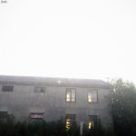

Популярное сейчас

ssshhhiiittt! — это проникновенный рок на русском языке о внутренних терзаниях и разочаровании в самом себе. Благодаря цепким мелодиям и понятным каждому текстам, группа моментально стала одним из главных явлений на отечественной сцене, расширяя с каждым днем географию своих слушателей.
Главная творческая единица группы — Никита Кислов, создатель прародителя «ssshhhiiittt!» — «shit shit shit». Никита занимается написанием текстов и созданием аранжировок. Его музыкальными ориентирами стали Bondage Fairies, The Wytches, Freud and Suicidal Vampires, Mineral и другие.
Точкой отсчёта стал первый EP, вышедший 19 июня 2015 года, в который попали композиции «Вы», «Клоун», «Рассвет». В течение полугода после первого релиза проект существовал исключительно в сети. Спустя некоторое время появились первые слушатели, количество которых перевалило за тысячу, собрался концертный состав. Первый выход на сцену произошёл зимой 2016 года в Ярославле, первый московский концерт прошел 23 июля того же года.
Тогда же дискография музыкальной команды пополнилась еще одной пластинкой «Я так ненавижу это». И это уже была заявка на успех, принесшая группе популярность. Летом Кислов приехал в Москву и договорился о презентации диска в клубе «Лес». Особую популярность получили треки «Восемь», «Корабль», «Мы» и «Ничего».
Через год продуктивной работы свет увидел альбом «Вторая жизнь». Символичное название пластинке, в которую вошли композиции «Мертвое время», «Монстры в городе» и «Еще один день», дал Никита Кислов. Вокалист объяснил: 2017 год стал для него переломным, он много потерял, но и приобрел. Определенно, музыкант чувствовал: он стоит на пороге чего-то нового.
Действительно, год для ssshhhiiittt! оказался знаковым. Стремительный рост популярности коллектива стал стимулом к началу концертной деятельности. На команду обратил взор российский промоутер Степан Казарьян и организовал выступление на сцене «16 тонн». Благодаря Степану группа отправилась в первый тур по России, посетив 7 городов и заявила о себе на фестивале «Боль».
В сентябре 2018 года коллектив представил новый диск «Зло». Пластинка вошла в топ-5 популярнейших релизов по версии портала «Родной звук». Особенностью треков стало сочетание жесткой лирики с меланхолическими пассажами. А 13 сентября группа отправилась в большой тур, рассчитанный на посещение 33 городов.
В ноябре 2020 года вышел очередной альбом ssshhhiiittt! «Третья жизнь». В интервью Никита Кислов пояснил, что пластинка была основана на сильном разочаровании. А если говорить конкретно, то поводом для написания большинства песен стало расставание с девушкой, с которой он жил на протяжении нескольких лет.
Некий посыл к бывшей возлюбленной прослеживается в треке «Реквием». В нем Кислов произнес те слова, на которые не решился в реальной жизни. Вообще, чувства и любовь — главные составляющие творчества ssshhhiiittt!, качественно отличающегося от других рок-исполнителей по эмоциональному посылу и звучанию.